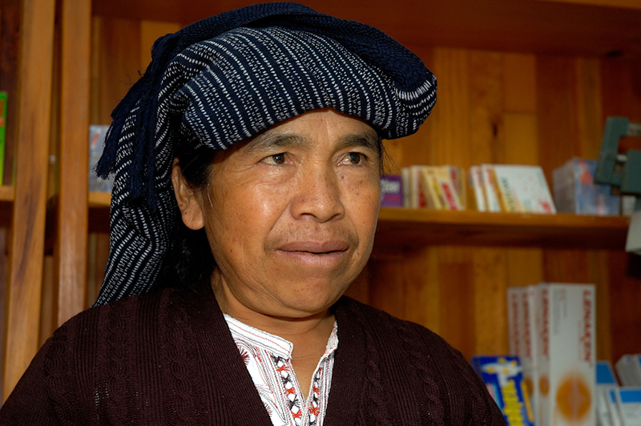
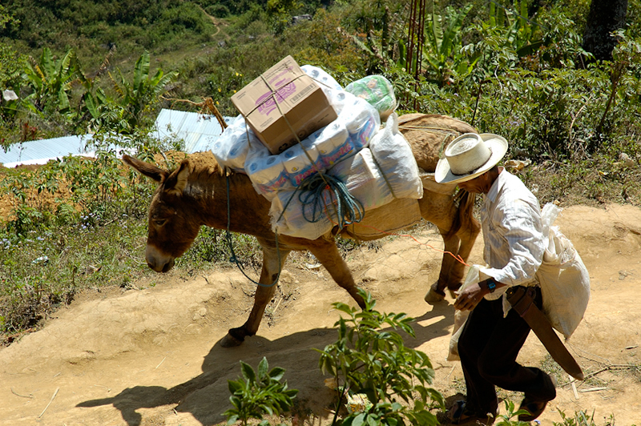
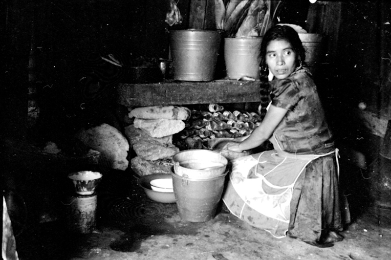
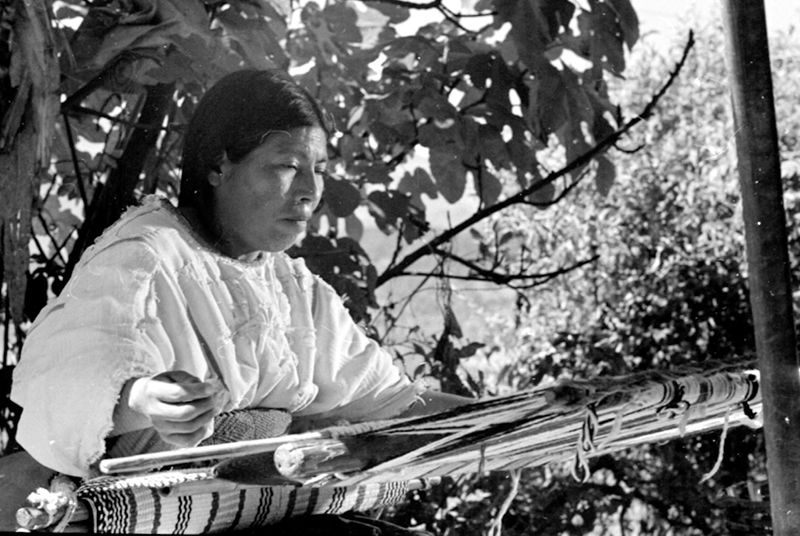

 Los mixes se llaman a sí mismos Ayuukjä'äy. La lengua que hablan es ayuuk, que es el nombre con que históricamente se conoce al grupo. La palabra ayuuk está compuesta de los siguientes morfemas: a = idioma, palabra; yuuk: montaña, florido; y yä'äy: gente, muchedumbre. Por lo tanto, su significado es "gente del idioma florido". Según la tradición oral, la palabra mixes es una corrupción del vocablo mixy (varón-hombre), al que se le agregó el plural "es". Otros piensan, que mixes pudo haber surgido de la dificultad de los españoles de pronunciar el vocablo original.

La región mixe se encuentra al noreste del estado de Oaxaca. Colinda al noroeste con los ex distritos de Villa Alta; al norte con Choapam y con el estado de Veracruz; al sur con Yautepec y al sureste con Juchitán y Tehuantepec. El territorio abarca una superficie total de 4 668.55 km2.
La topografía es accidentada, se pueden encontrar varios microclimas en un espacio geográfico reducido. La región ayuuk ha sido dividida en tres zonas climáticas: alta o fría, con altitudes superiores a los 1 800 m, media o templada, con alturas de 1 300 a 1 800 m, y baja o caliente que se localiza desde los 35 m hasta los 1 000 msnm.
La región tiene un total de 19 municipios: la zona alta está integrada por Tlahuitoltepec, Ayutla, Cacalotepec, Tepantlali, Tepuxtepec, Totontepec, Tamazulapam y Mixistlán; la zona media por Ocotepec, Atitlán, Alotepec, Juquila Mixes Camotlán, Zacatepec, Cotzocón, Ouetzaltepec, e lxcuintepec y la zona baja por Mazatlán y Guichicovi.
La hipótesis más aceptada hasta el momento sobre el origen del grupo es la del investigador George Foster, que coincide con la filiación lingüística propuesta por Swadesh y que vincula al mixe-zoque-popoluca-tapachulteco con el tronco macro-maya. Esta hipótesis sugiere que los mixes debieron haber ocupado una franja del Istmo de Tehuantepec.
A mediados del siglo XVI, los españoles utilizaron como táctica de conquista, la evangelización, ésta estuvo a cargo de los dominicos, quienes fundaron vicarías en lugares como Villa Alta, Totontepec y Najapa de Madero, en esta última localidad introdujeron un Cristo negro en su centro ceremonial.
En 1938 se estableció oficialmente el distrito mixe, y el municipio de Zacatepec como cabecera de las autoridades judiciales y hacendarias. A partir de este nombramiento, se han presentado en la región serios conflictos políticos originados por cacicazgos locales. También se han presentado luchas violentas debido a conflictos agrarios.

La familia lingüística mixe-zoqueana está integrada por el mixe (ayuuk), el zoque y el popoluca; aunque hay quienes incluyen el tapachulteca (lengua extinta).
Entre los ayuuk jä'äy existen variantes dialectales inteligibles entre sí; sin embargo, cada pueblo dice hablar el ayuuk "más correctamente".
 La música puede considerarse como la principal actividad artística que cultivan los ayuuk. En cuanto a artesanías, podemos encontrar el telar de cintura, el cual se ha mantenido en Tamazulapam, Tlahuitoltepec y Cotzocón; mientras que Mixistlán, Tamazulapam y algunas rancherías de Ayutla, se caracterizan por la producción de alfarería.